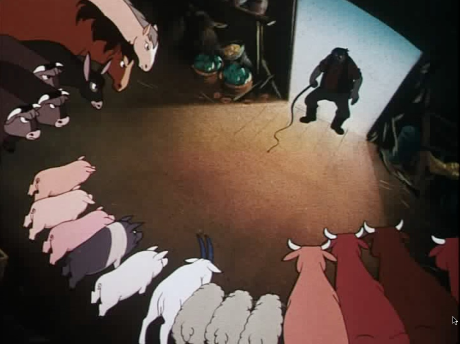
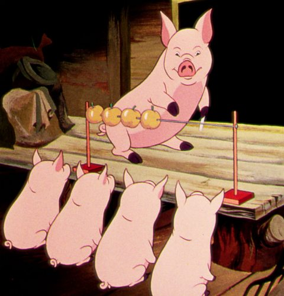
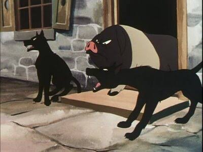
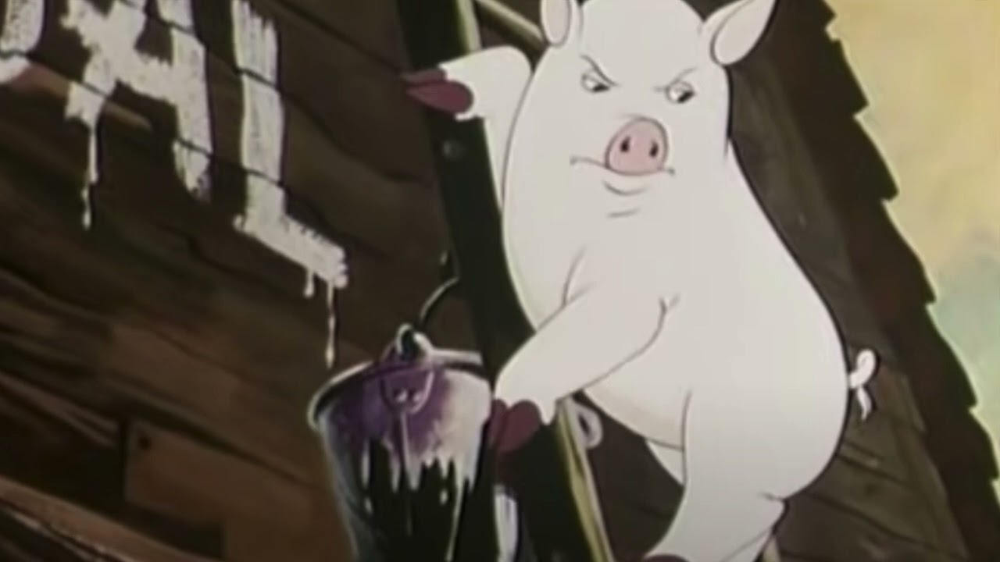
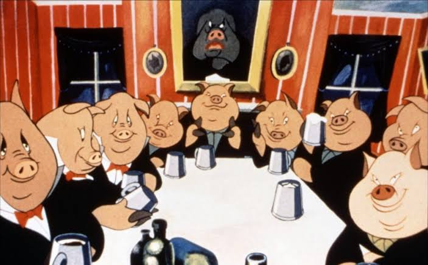

STEP 01
ABOUT THE BOOK & AUTHOR
แอนิมอล ฟาร์ม (Animal Farm)
เมื่อฟาร์มของสัตว์ กลายเป็นภาพสะท้อนของอำนาจและสังคมมนุษย์
Animal Farm ผลงานคลาสสิกของ จอร์จ ออร์เวลล์ (George Orwell) ตีพิมพ์ครั้งแรกในปี 1945 เล่าเรื่องของเหล่าสัตว์ในฟาร์มที่ลุกขึ้นต่อต้านมนุษย์เจ้าของฟาร์ม เพราะหวังสร้างสังคมใหม่ที่ทุกชีวิตมีอิสระและเท่าเทียมกัน
แต่เมื่อเวลาผ่านไป อุดมการณ์ที่สวยงามกลับค่อย ๆ เปลี่ยนแปลง เมื่อผู้ที่ได้อำนาจเริ่มสร้างกฎ ตีความความจริง และกำหนดว่าใครควรเชื่ออะไร
แม้จะเป็นเรื่องราวของสัตว์ในฟาร์ม แต่หนังสือเล่มนี้กำลังชวนเรามองกลับมายัง อำนาจ การเมือง ความเท่าเทียม และธรรมชาติของมนุษย์ ผ่านเรื่องเล่าที่อ่านง่าย กระชับ และยังร่วมสมัยแม้เวลาจะผ่านมากว่า 80 ปี
1945
ปีที่ตีพิมพ์ครั้งแรก
เรื่องราวสะท้อนประวัติศาสตร์ที่ยังคมชัดและร่วมสมัยจนถึงปัจจุบัน
อ่านไม่ยาว
เรื่องกระชับ จบไว
เหมาะทั้งสำหรับผู้เริ่มอ่านวรรณกรรมและผู้ที่สนใจประเด็นสังคม
คลาสสิก
วรรณกรรมทรงคุณค่า
หนังสือที่ได้รับการอ่านและพูดถึงอย่างต่อเนื่องทั่วโลก
THE 5 STAGES OF CORRUPTION
5 กลยุทธ์กลืนอำนาจ: จากความหวังสู่เผด็จการ
💡 ชี้เมาส์ที่แต่ละขั้นตอน (หรือแตะบนมือถือ/แท็บเล็ต) เพื่อคลี่อ่านเนื้อหาและวาทกรรมกล่อมประสาท

STEP 022. อ้างความฉลาด เพื่อสร้างอภิสิทธิ์แรก

STEP 033. เลี้ยงกองกำลังส่วนตัว & กำจัดคนเห็นต่าง

STEP 044. แอบแก้กฎหมายย้อนหลัง & สั่งประหารกลางลาน

FINALE5. กลายร่างเป็นปีศาจที่ตนเคยลุกขึ้นสู้
THE CAST & ALLEGORY
ตัวละครสำคัญ: กระจกสะท้อนมนุษย์ในสังคม
💡 ชี้เมาส์ที่รูปตัวละครด้านบนเพื่อสลับดูรายละเอียดในหน้าต่าง Spotlight
WHY READ ANIMAL FARM TODAY
3 ประเด็นที่ทำให้ Animal Farm ยังน่าอ่านในวันนี้
เรื่องราวที่ทำให้เรากลับมาตั้งคำถามกับอำนาจ ความจริง และความเท่าเทียม
1. เมื่อผู้มีอำนาจเป็นคนกำหนดความหมายของคำ
คำที่ดูธรรมดาอย่าง “ความเท่าเทียม” หรือ “ความยุติธรรม” อาจเปลี่ยนความหมายได้ หากผู้มีอำนาจเป็นฝ่ายกำหนดว่าอะไรคือความจริง Animal Farm ทำให้เราเห็นว่า ภาษาไม่ได้มีไว้เพียงสื่อสาร แต่ยังสามารถใช้โน้มน้าวและควบคุมความคิดของผู้คนได้ด้วย
2. ความภักดีโดยไม่ตั้งคำถาม อาจทำให้เรากลายเป็นผู้ถูกใช้
ตัวละครบางตัวเชื่อมั่น ทำงานหนัก และยอมเสียสละเพื่อส่วนรวม แต่ไม่เคยตั้งคำถามกับสิ่งที่ผู้นำบอก หนังสือจึงชวนผู้อ่านคิดว่า ความซื่อสัตย์เป็นสิ่งที่ดี แต่ควรเดินคู่กับการคิดและตรวจสอบเสมอ
3. อำนาจที่ไม่มีใครตรวจสอบ อาจเปลี่ยนอุดมการณ์ได้
การเปลี่ยนแปลงในฟาร์มเริ่มต้นจากความฝันเรื่องเสรีภาพและความเท่าเทียม แต่เมื่ออำนาจรวมอยู่ในมือของคนเพียงกลุ่มเดียว สิ่งที่เคยต่อสู้เพื่อเปลี่ยนแปลงก็อาจย้อนกลับมาในรูปแบบใหม่ นี่คือหนึ่งในเหตุผลที่เรื่องราวจากปี 1945 ยังชวนให้คนอ่านตั้งคำถามกับสังคมในปัจจุบัน
BEFORE YOU READ
Animal Farm เหมาะกับใคร?
ไม่จำเป็นต้องรู้เรื่องการเมืองมาก่อน และไม่จำเป็นต้องเป็นคนที่อ่านวรรณกรรมเป็นประจำ
เพราะ Animal Farm เล่าเรื่องซับซ้อนผ่านเหตุการณ์ในฟาร์มที่เข้าใจง่าย แต่เปิดพื้นที่ให้ผู้อ่านตีความได้มากกว่าที่เห็น
อยากเริ่มอ่านวรรณกรรมคลาสสิก
เรื่องไม่ยาว โครงเรื่องเข้าใจง่าย และเข้าถึงได้แม้ไม่คุ้นเคยกับวรรณกรรม
ชอบหนังสือที่ชวนคิด
อ่านจบแล้วอาจทำให้ย้อนกลับมาคิดถึงคำว่า อำนาจ ความเท่าเทียม และความยุติธรรม
สนใจสังคมและการเมือง
ได้เห็นประเด็นเรื่องผู้นำ การโฆษณาชวนเชื่อ และการใช้อำนาจ ผ่านเรื่องเล่าที่ไม่หนักจนเกินไป
อยากอ่านหนังสือที่ยังร่วมสมัย
แม้ตีพิมพ์มาตั้งแต่ปี 1945 แต่หลายคำถามในเรื่องยังเชื่อมโยงกับสังคมปัจจุบันได้
BIBLIOGRAPHIC RECORD
ข้อมูลทางบรรณานุกรม
ข้อมูลการจัดพิมพ์ฉบับแปลภาษาไทยสำหรับการอ้างอิงและการศึกษา
ข้อมูลบรรณานุกรมของหนังสือ (CIP Data)
ฉบับภาษาไทย
ชื่อเรื่อง:
แอนิมอล ฟาร์ม : การเมืองเรื่องสรรพสัตว์
ชื่อเรื่องเดิม:
Animal Farm: A Fairy Story
ผู้เขียน:
จอร์จ ออร์เวลล์ (George Orwell)
ผู้แปล:
สรวงอัปสร กสิกรานันท์
การพิมพ์:
พิมพ์ พ.ศ. 2564
สำนักพิมพ์:
สำนักพิมพ์แอร์โรว์ (Arrow Publishing)
ขนาดรูปเล่ม:
184 หน้า
ISBN:
978-434-238-5